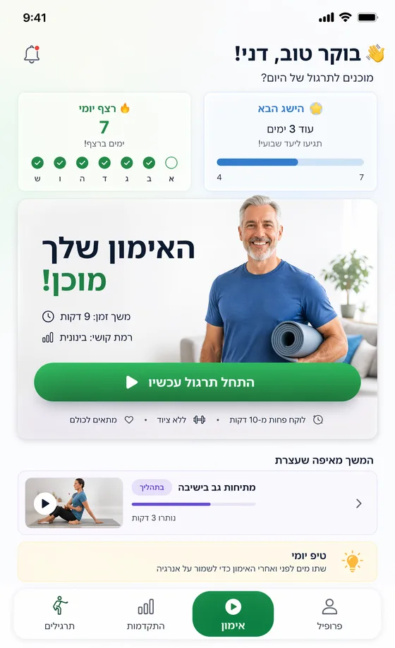
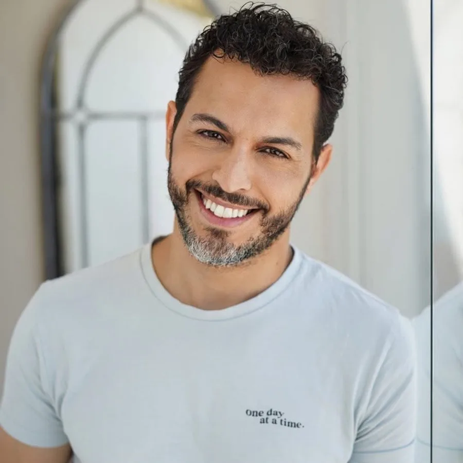

פעילים+ היא תוכנית אישית לאימון הגוף וחדות המחשבה, שמתאימה את עצמה ליכולות, למטרות ולקצב שלכם.
בכל אימון משלבים תנועה, קואורדינציה ומשימות חשיבה – בתוכנית פשוטה שאפשר לבצע בבית ומכל מקום אחר, בזמן שנוח לכם.
ממלאים שאלון קצר ומקבלים תוכנית בהתאמה אישית.
בתחילת הדרך נשאל אתכם מספר שאלות על הגיל, המטרות, רמת הפעילות, היכולת התנועתית והרגלים.
בהתאם לתשובות, פעילים+ מתאימה עבורכם תוכנית אימונים אישית כדי שתתחילו במקום שמתאים לכם ותוכלו להתקדם בהדרגה.
- 01
עונים על כמה שאלות
מספר דקות שעוזרות לנו להכיר אתכם ואת המטרות שלכם.
- 02
מקבלים תוכנית אישית
האימונים מותאמים ליכולות ולרמה שלכם.
- 03
מתאמנים כ־10 דקות ביום
פותחים את האפליקציה ופשוט מתחילים.
- 04
רואים את ההתקדמות
עוקבים אחר האימונים והמדדים לאורך הדרך.
גוף ומוח באותו אימון
בפעילים+ לא צריך לבחור בין אימון גופני לבין עבודה על היכולות הקוגניטיביות.
במהלך חלק מהתרגילים תתבקשו להמשיך לנוע ובמקביל לענות על שאלות ומשימות קצרות.
לדוגמה:
- הרמת ברכייםתוך כדישליפת מילים
- תרגיל קואורדינציהלצדמשימת זיכרון
- תנועהתוך כדיתגובה לשאלה שמופיעה על המסך
השילוב הזה נקרא Dual Tasking – אימון במשימה כפולה: ביצוע משימה תנועתית ומשימה קוגניטיבית בו־זמנית.
כך האימון משלב עבודה על כוח ותנועה, קואורדינציה, קשב, זיכרון ומהירות תגובה – בתוך אותה שגרת אימון.
האימון היומי שלכם
קצר מספיק כדי להשתלב ביום. מגוון מספיק כדי שתרצו לחזור מחר.
בכל יום מחכה לכם אימון בהתאמה אישית של כ־10 דקות.
האפליקציה מציגה את התרגיל, מסבירה כיצד לבצע אותו ומלווה אתכם לאורך האימון.
התרגילים משתנים בהתאם לתוכנית ולרמה שלכם, כך שהאימון נשאר מגוון ולא מרגיש כמו אותה סדרה שחוזרת על עצמה שוב ושוב.
אפשר להתאמן בבית ובזמן שנוח לכם – דרך הטלפון או הטאבלט.

לא רק להתאמן. גם לדעת איך מתקדמים.
פעילים+ מרכזת עבורכם את הפעילות והמדדים במקום אחד, כדי שתוכלו להבין איך אתם מתקדמים לאורך זמן.
תוכלו לעקוב אחר מדדים כגון התמדה באימונים, איכות ודיוק התנועה, קשב וזיכרון ומהירות תגובה, בהתאם ליכולות ולמדידות הזמינות במהלך האימון.

במקום להסתמך רק על התחושה, תוכלו לראות את הדרך שעשיתם ולזהות תחומים שבהם כדאי להמשיך להתמקד.
ויש גם אתגרים
מחפשים אתגר נוסף?
באפליקציה מחכים לכם אתגרים ממוקדים לתקופות שונות, לצד התוכנית האישית שלכם.
אתגר הגוף החזק
לחיזוק הגוף, השליטה בתנועה והביטחון בתפקוד היומיומי.
אתגר שיווי המשקל
תרגול ממוקד של יציבה, שיווי משקל ושליטה.
אתגר המוח החד
שילוב של קואורדינציה ומשימות קוגניטיביות באותו אימון.
כל אתגר נותן לכם מטרה ברורה ואת הדרך להשיגה.
מאחורי הטכנולוגיה יש גם אנשי מקצוע
התוכן והתרגילים בפעילים+ נבנים ומלווים בעזרת אנשי מקצוע מתחומי הפיזיותרפיה, קינזיולוגיה, השיקום הנוירולוגי והריפוי בעיסוק.
המטרה היא לקחת ידע מקצועי ולהפוך אותו לחוויית אימון יעילה, ברורה ונגישה שאפשר לשלב בשגרת היום.

גדי בן שטרית
פיזיותרפיסט מוסמך
דניאל שפיר
שיקום נוירולוגי
מתחילים מהמקום שמתאים לכם
לא צריך לדעת איזה אימון לבחור ולא צריך לבנות תוכנית לבד.
ענו על כמה שאלות קצרות, ספרו לנו מה חשוב לכם לשפר, ופעילים+ תעזור לכם להתחיל בתוכנית שמתאימה לכם.
רק 10 דקות ביום כדי להישאר פעילים וחדים.